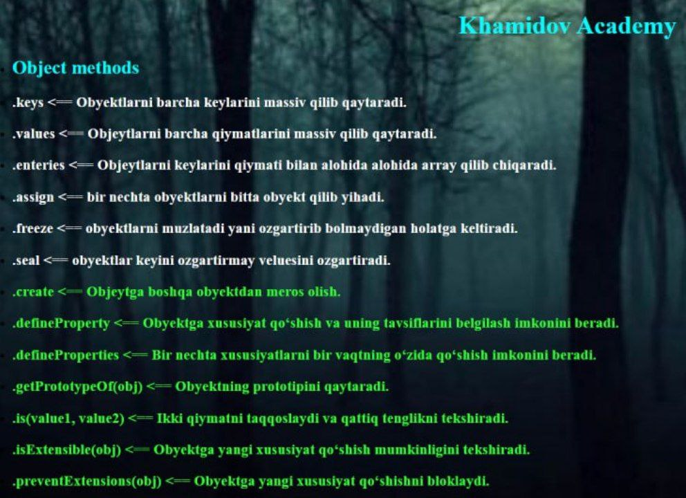

JavaScript
-
Object va Array methodlari
Array va Object methodlari bu method keysiga yozilgan kodlar hisoblanadi bu keyni kodda ishlatish orqali kodimizga keyga yozilgan funksiyalarini qoshamiz.
Object Methods
Array Methods
Array Methods
-
Amaliyot (Object Methods)
-
Foydalanuvchi haqidagi ma'lumotlarni olish: Foydalanuvchi obyektining kalitlarini olish, masalan, name, age va location kabi.
-
Mahsulotning xususiyatlarini olish: Mahsulotlar obyektidan barcha xususiyatlarni olish. (name,brend,price)
-
Xodimlar ro'yxatining xususiyatlari: Xodimlar haqidagi barcha kalitlarni olish.(id,name,position)
-
Mijozlar haqidagi ma'lumotlarni olish: Mijozlar obyektining barcha kalitlarini olish. (id,name,email)
-
Foydalanuvchi ma'lumotlarini olish: Foydalanuvchining barcha qiymatlarini olish. (name,age,location)
-
Mahsulotlar narxlarini olish: Mahsulot narxlarini olish. (name brend price)
-
Xodimlarning maoshlarini olish: Xodimlarning maoshlarini olish. (id name maosh)
-
Mijozning to'lov tarixini olish: Mijozning to'lovlarini olish. id name hisobi
-
Foydalanuvchi haqida kalit-qiymat juftligini olish: Foydalanuvchining ma'lumotlarini kalit-qiymat juftligi sifatida olish. name age locatsion
-
Mahsulot haqida ma'lumotlarni olish: Mahsulotning kalit-qiymat juftliklarini olish. name brand price
-
Xodimlar ro'yxatidagi ma'lumotlar: Xodimlar haqidagi ma'lumotlarni kalit-qiymat juftliklari sifatida olish. id name position
-
Mijoz haqidagi ma'lumotlarni olish: Mijoz haqidagi kalit-qiymat juftliklarini olish. id name email
-
Foydalanuvchi malumotlarini yangilash: Foydalanuvchining ma'lumotlarini yangilash (masalan, email qo'shish). name age email hobby
-
Mahsulotni yangilash: Mahsulot haqida qo'shimcha ma'lumotlar qo'shish. name price brand
-
Xodimlar ma'lumotlarini yangilash: Xodimning lavozimini yangilash. name position city
-
Mijoz ma'lumotlarini yangilash: Mijozning telefon raqamini qo'shish. name password email
-
Foydalanuvchi obyektini muzlatish: Foydalanuvchi obyektini muzlatib, uni o'zgartirishni oldini olish. (ucer name age)
-
Mahsulot obyektini muzlatish: Mahsulot obyektini muzlatish va uning qiymatini o'zgartirishni cheklash. (name price caunt)
-
Xodimlar ro'yxatini muzlatish: Xodimlar ro'yxatidagi ma'lumotlarni o'zgartirishni cheklash. id name position
-
Mijozlar obyektini muzlatish: Mijozlar obyektini muzlatib, uning ma'lumotlarini o'zgartirishni oldini olish. id name position
-
Foydalanuvchi obyektini muhrlash: Foydalanuvchi obyektiga yangi kalit qo'shishni oldini olish, lekin qiymatini o'zgartirish mumkin bo'ladi. ucer password email
-
Mahsulot obyektini muhrlash: Mahsulot obyektini muhrlab, uning narxini o'zgartirish, ammo yangi xususiyatlar qo'shishni taqiqlash. name price caunt
-
Xodimlar ro'yxatini muhrlash: Xodimlar ro'yxatidagi ma'lumotlarni muhrlash va yangi xususiyatlarni qo'shishni cheklash. id name cauntry
-
Mijozlar obyektini muhrlash: Mijozlar obyektini muhrlab, uning telefon raqamini qo'shishni oldini olish, ammo boshqa xususiyatlarini o'zgartirish mumkin bo'ladi. name password email
-
Prototip merosini yaratish Object.create() yordamida yangi obyekt yaratish va unga prototip sifatida boshqa obyektni bog'lash.
-
Obyektdagi xususiyatni o'zgartirilmas qilish Object.defineProperty() yordamida obyektning xususiyatini "readonly" (faqat o'qish) qilib belgilash.
-
Obyektdagi ko'plab xususiyatlarni bir vaqtning o'zida aniqlash Bir nechta xususiyatlarni bir vaqtning o'zida aniqlash va turli xususiyatlarni sozlash.
-
Obyektda muayyan xususiyat borligini tekshirish hasOwnProperty() metodini obyektning o'zida mavjud bo'lgan xususiyatni tekshirishda ishlatish.
-
Ikki obyektning tengligini tekshirish Object.is() yordamida ikki obyektni yoki qiymatni tengligini tekshirish.
-
Kalit-qiymat juftlaridan obyekt yaratish Object.fromEntries() yordamida massivdagi kalit-qiymat juftlaridan obyekt yaratish.
Object.keys()
Object.values()
Object.entries()
Object.assign()
Object.freeze()
Object.seal()
Object.create()
Object.defineProperty()
Object.defineProperties()
Object.hasOwnProperty()
Object.is()
Object.fromEntries()
Amaliyot (Array Methods)
-
Sizda ['apple', 'banana', 'cherry'] massiv bor. Har bir elementni katta harflarga o‘tkazing.
-
Talabalar ballari massivini berilgan balldan 5 ball ko‘tarib, yangi massiv hosil qiling.
-
Massivdan juft sonlarni ajratib oling: [1, 2, 3, 4, 5, 6].
-
Ishchilar ro‘yxatidan faqat "developer" bo‘lganlarni ajratib oling: (ali menager, bek devoloper, zarina developer, dilshod designer.)
-
Berilgan sonlar massivining yig‘indisini hisoblang: [1, 2, 3, 4, 5].
-
Ishchilarning umumiy oyliklarini hisoblang:const salaries = [ { name: 'Ali', salary: 1200 }, { name: 'Bek', salary: 1500 }, { name: 'Dilshod', salary: 1000 } ];
-
Massivdan 3 sonini toping: [1, 2, 3, 4, 5].
-
Talabalardan birinchi bo‘lib 60 dan yuqori ball olgan talaba ma'lumotlarini toping: const students = [ { name: 'Ali', score: 56 }, { name: 'Bek', score: 78 }, { name: 'Dilshod', score: 82 } ];
-
Sonlar massivini o‘sish tartibida saralang: [4, 2, 5, 1, 3].
-
Talabalarni baliga qarab kamayish tartibida saralang: const students = [ { name: 'Ali', score: 56 }, { name: 'Bek', score: 78 }, { name: 'Dilshod', score: 82 } ];
-
Massivdagi har bir elementni konsolga chiqaring: [1, 2, 3].
-
Talabalar ro‘yxatidagi har bir talabaning ismi va balini quyidagi shaklda konsolga chiqaring: const students = [ { name: 'Ali', score: 56 }, { name: 'Bek', score: 78 }, { name: 'Dilshod', score: 82 } ];
-
Har bir yangi talaba qo‘shilganida ro‘yxatning oxiriga qo‘shib, yangi umumiy o‘rtacha ballni hisoblang. students = [{ name: 'Ali', score: 75 }, { name: 'Bek', score: 85 }]; const newStudent = { name: 'Zarina', score: 90 };
-
Chiqindilarni boshqarish tizimida yangi chiqindi qo‘shilganida ro‘yxatni yangilang va umumiy chiqindilarni kilogrammda hisoblang. const trashList = [{ type: 'plastic', kg: 5 }, { type: 'glass', kg: 3 }]; const newTrash = { type: 'metal', kg: 2 }; trashList.push(newTrash);
-
Ro‘yxatdan oxirgi elementni olib tashlang va o‘sha elementni logda saqlang. const tasks = ['Task 1', 'Task 2', 'Task 3'];
-
Oxirgi qo‘shilgan mijozni ro‘yxatdan o‘chirib, qolgan mijozlar ro‘yxatini qaytaring. const customers = ['Ali', 'Bek', 'Zarina'];
-
Ro‘yxat boshiga yangi tovarni qo‘shing va ro‘yxat uzunligini qaytaring.
-
Yangi boshlang‘ich talabalarni talaba ro‘yxati boshiga qo‘shing va qayta saralang.
-
Kuzatuv ro‘yxatining birinchi elementini o‘chirib tashlang va qolgan elementlarni yangi massivga qaytaring. const queue = ['User1', 'User2', 'User3'];
-
Kechikkan birinchi avtomobilni olib tashlang va logga kiriting. const cars = ['Car1', 'Car2', 'Car3'];
-
Ishchilar ro‘yxatidan birinchi bo‘lib "developer" bo‘lgan ishchining indeksini toping. const workers = [ { name: 'Ali', role: 'manager' }, { name: 'Bek', role: 'developer' }, { name: 'Zarina', role: 'designer' } ];
-
Talabalardan birinchi bo‘lib 50 dan yuqori ball olgan talabaning indeksini toping. const scores = [35, 48, 78, 42];
-
Ikki massivni birlashtirib, yangi massiv yarating. const arr1 = [1, 2, 3]; const arr2 = [4, 5, 6];
-
Ikki talaba ro‘yxatini birlashtiring va alifbo tartibida saralang. const students1 = ['Ali', 'Bek']; const students2 = ['Zarina', 'Dilshod'];
-
Massivning faqat o‘rtasidagi 2 elementini oling. const arr = [1, 2, 3, 4, 5];
-
To‘liq massivni nusxalang va o‘zgaruvchan massiv hosil qiling.
-
Massivning o‘rtasiga yangi elementlar qo‘shing.
-
Massivdan 2-elementni olib tashlang va olib tashlangan elementni qaytaring. const arr = [1, 2, 3, 4, 5];
-
Foydalanuvchi kiritgan mahsulot nomining mavjudligini oziq-ovqat mahsulotlari ro‘yxatida tekshiring. Agar mavjud bo‘lsa, natija qaytaring. const products = ['non', 'shakar', 'guruch', 'makaron']; const userInput = 'shakar';
-
Parolni tekshiring: agar parolda kamida bitta maxsus belgi (@, #, $, %) bo‘lsa, parol qabul qilinsin.
-
Foydalanuvchi kiritgan massivni teskariga o‘giring va har bir qiymatni kvadratga oshirib chop eting.
-
Matnni teskariga aylantirib, undagi faqat unli harflarni o‘z tartibida chop eting.
-
Foydalanuvchi kiritgan raqamlarni massiv sifatida qabul qiling va ularni qo‘sh tirnoqli (") formatda chop eting.
-
Tasodifiy generatsiya qilingan rang kodlarini (masalan, rgb(255,0,0)) vergul bilan ajratib, bir satrda chop eting.
-
Foydalanuvchi kiritgan jumlani har bir so‘zga ajratib, ularni o‘rta uzunligi (word.length / 2) dan katta bo‘lgan so‘zlarni chop eting.
-
Sayt foydalanuvchisi kiritgan URL-ni analiz qilib, undagi param=value juftliklarini alohida massivga ajratib oling.
map()
filter()
reduce()
find()
sort()
forEach()
push
pop
unshift
shift
findIndex
cancat
slice
splice
incloudes
reverse
join
split
Uyga vazifa
-
Obyektning shaxsiy ma'lumotlarini muzlatish Foydalanuvchi ma'lumotlari obyektini muzlatib, uni tahrirlashni oldini olish. Bu sizning ma'lumotlar xavfsizligini ta'minlashga yordam beradi. (ucer obyekti ichida id name email adress obyekti icida street city bolishi kerak.)
-
Obyektni muzlatish va deep freeze qilish Object.freeze() faqat yuqori darajali xususiyatlarni himoya qiladi, ammo ichki obyektlar o'zgartirilishi mumkin. Bunday hollarda "deep freeze" funksiyasini yaratish zarur.
-
Foydalanuvchi profilini muhrlash Foydalanuvchi profilini muhrlab, yangi xususiyatlarni qo'shishni oldini olish, ammo mavjud ma'lumotlarni o'zgartirishga ruxsat berish. id name emal qoshish kerak name ozgartir
-
Mahsulot qo'shish va narxini o'zgartirish Mahsulotlar ro'yxatini muhrlash va yangi mahsulotlarni qo'shishning oldini olish, ammo narxini yangilashga ruxsat berish.
-
Foydalanuvchi va admin ma'lumotlarini birlashtirish Foydalanuvchi va admin obyektlarini birlashtirib, foydalanuvchi ma'lumotlariga admin xususiyatlarini qo'shish.
-
Default sozlamalarni o'rnatish Agar foydalanuvchi ma'lumotlarida ba'zi kalitlar mavjud bo'lmasa, ularni Object.assign() yordamida default qiymatlar bilan to'ldirish.
-
Obyektdagi kalitlarni tekshirish Obyektning barcha kalitlarini olish va tekshirish, keyin esa bu kalitlar yordamida ishlash.
-
Ma'lumotlar bazasini tekshirish Ma'lumotlar bazasidagi ma'lum bir obyektlar ichida muayyan kalit borligini tekshirish.
-
Obyekt qiymatlarini chiqarish Obyektning barcha qiymatlarini olish va konsolga chiqarish.
-
Obyekt qiymatlaridan statistikani olish Obyektning qiymatlaridan statistik ma'lumotlar olish (masalan, barcha yoshlar yig'indisi).
-
Obyektning barcha kalit-qiymat juftlarini chiqarish Obyektning barcha kalit-qiymat juftlarini olish va konsolga chiqarish.
-
Obyektni yangi shaklga o'zgartirish Kalit-qiymat juftlarini olish va yangi shaklda obyekt yaratish.
-
Dinamik prototipli obyektlar yaratish Object.create() yordamida dinamik prototipli obyektlar yaratish. Masalan, ishlov berish jarayonlarini boshqarish uchun turli task obyektlarini yaratish.
-
Xususiyatni faqat o'qish uchun qilish Object.defineProperty() yordamida obyekt xususiyatini faqat o'qish uchun sozlash, masalan, foydalanuvchi profilidagi age xususiyatini faqat ko'rsatish (o'zgartirishni oldini olish).
-
Bir nechta xususiyatlarni ta'sirli sozlash Object.defineProperties() yordamida bir nechta xususiyatni o'zgartirish va ularni turli usullar bilan belgilash, masalan, foydalanuvchi profilidagi email va isActive xususiyatlarini bir vaqtning o'zida yaratish.
-
Obyektda kutilmagan xususiyat borligini aniqlash hasOwnProperty() yordamida kutilmagan xususiyatni tekshirish. Masalan, foydalanuvchi inputlari asosida yuborilgan obyektning haqiqiy xususiyatlarini tekshirish.
-
Ikki turli obyektni taqqoslash Object.is() yordamida ikki turli obyektni, jumladan NaN va -0 kabi maxsus qiymatlarni taqqoslash.
-
URL parametrlardan obyekt yaratish Object.fromEntries() yordamida URL parametrlarini parslash va obyekt yaratish, masalan, veb sahifadagi query stringni obyektga aylantirish.
-
Massivga foydalanuvchi kiritgan yangi talabalarni qo‘shing.
-
Massivdagi oxirgi elementni olib tashlang va chop eting.
-
Massiv boshidagi birinchi mahsulotni olib tashlang va qaytarib bering.
-
Massiv boshiga yangi elementlar qo‘shing.
-
Massivdagi birinchi 10 dan katta sonning indeksini toping.
-
Ikki kursdagi talabalar ro‘yxatini birlashtiring.
-
Foydalanuvchiga buyurtmalar ro‘yxatidan 2-dan 4-gacha buyurtmalarni qaytaring.
-
Massivning o‘rtasiga yangi element qo‘shing va eskilarni olib tashlang.
-
Berilgan massivda kerakli elementning borligini tekshiring.
-
Massivdagi elementlarni teskariga aylantiring.
-
Massivdagi so‘zlarni vergul bilan ajratib bir satrga birlashtiring.
-
Matnni har bir so‘zga ajratib massiv hosil qiling.
Object.freeze()
Object.seal()
Object.assign()
Object.keys()
Object.values()
Object.entries()
Object.create()
Object.defineProperty()
Object.defineProperties()
Object.hasOwnProperty()
Object.is()
Object.fromEntries()
Array methods
push()
pop()
shift()
unshift()
findIndex()
concat()
slice()
splice()
includes()
reverse()
join()
split()
-